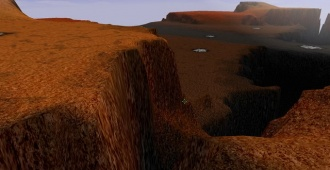
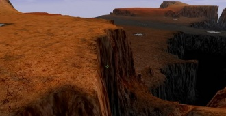
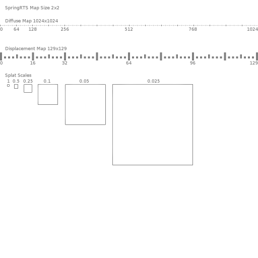
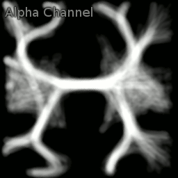
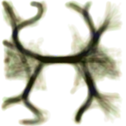
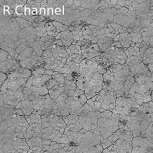
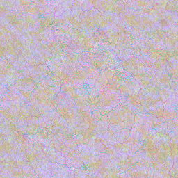

Mapdev:splatdetail
Details
Splat Detail textures extend the default single detail texture that is applied uniformly over the entire map, by allowing the mapper to specify 4 different greyscale detail textures, and offers control of the strength, spatial distribution and tiling resolution of each detail texture.
Important: Splat Detail textures requires a specular texture Mapdev:specular to exist and be defined in order to be enabled!
| Caution | |
|---|---|
| requires clients to have GLSL-spec hardware |
{kind=link}
 |
 |
| Default Detail Map | Splat Detail Maps |
|---|---|
| * Click on images for higher res | |
{kind=link}
{kind=link}
Specification
mapinfo.lua
local mapinfo = {
...
resources = {
...
splatDistrTex = "splatDistributionTex.tga",
splatDetailTex = "splatDetailTex.tga",
...
},
...
splats = {
texScales = {0.02, 0.02, 0.02, 0.02},
texMults = {1.0, 1.0, 1.0, 1.0},
},
...
}
texScales
texScales offers a way to adjust the tiling resolution of each of the 4 splat detail textures. Values of 0.02 are the default values, lower values will increase the size of the textures on the ground, and higher values will decrease the tile size.
 |
| texScales |
|---|
{kind=link}
texMults
texMults offers a quick way to adjust the strength at which each detail texture will be blended onto the map. Values of 1.0 are the default values, lower values will make the detail texture fainter, higher values make it more pronounced. This is very useful for fine-tuning the strengths after generating the splat distribution texture, which is time-consuming to manipulate in an image editor, and cant be increased above a certain value there.
Distribution Image
| File Location | ./maps/ |
|---|---|
| File Format | PNG, TGA |
| Colour Depth | 8bpp |
| Channels | RGBA |
| Resolution | Any, recommended powers of two, will be stretched over the terrain. |
The RGBA Channels are individual greyscale distribution maps which define which detail textures to splat onto the ground. The intensity of the splatted textures is multipled by the pixel values for the corresponding channels.
 |
 |
| Detail Distribution maps | Combined Result |
|---|
{kind=link}
{kind=link}
Detail Image
| File Location | ./maps/ |
|---|---|
| File Format | PNG, TGA |
| Colour Depth | 8bpp |
| Channels | RGBA |
| Resolution | Any, recommended powers of two, will be tiled over the terrain. |
Each Channel represents a seperate greyscale image. The ground colour is multiplied by the pixel values of the channel. The intensity of the effect is also controlled per channel using the texMults variables, low numbers = less effect.
 |
 |
| Individual Detail Textures | Combined Result |
|---|
{kind=link}
{kind=link}